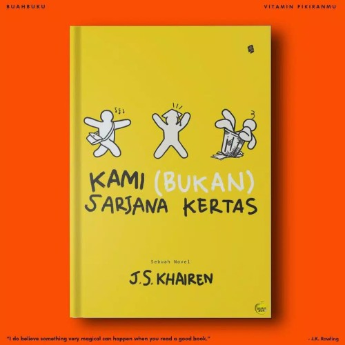

“Jadi sarjana atau tidak, itu cuma di atas kertas! Banyak sarjana yang menganggur juga. Banyak yang
tak sekolah tinggi tapi sukses. Banyak yang sarjana, begitu bekerja ternyata tidak bisa apa-apa. Masuk
kantor gagah, pulang-pulang gagap. Dunia profesional menuntut begitu tinggi, tak sampai napas mereka
berlari. Banyak sarjana tak pandai ilmu hidup, hanya bisa ilmu silabus saja. Sarjana kertas.” (J.S.
Khairen)
Satu dari sekian kata-kata yang ada di dalam buku Kami (Bukan) Sarjana Kertas, kata-kata ini seperti
menjadi tamparan buat kita, khususnya mahasiswa.
Kami (Bukan) Sarjana Kertas menceritakan tentang tujuh orang sahabat yang menjadi mahasiswa baru di
Universitas Dwi Eka Laksana atau disingkat UDEL. Alasan mereka masuk UDEL bermacam-macam, ada yang
otaknya tak sanggup masuk universitas negeri, ada yang orang tuanya tidak mampu menyekolahkan di
universitas swasta unggul, ada yang pilih kuliah di UDEL karena… ya pingin kuliah aja.
UDEL sendiri adalah kampus pilihan terakhir, rata-rata mahasiswa yang masuk ke UDEL dikarenakan tidak
lulus kuliah di universitas negeri akhirnya terpaksa masuk UDEL, bahkan saking buruknya reputasi kampus
UDEL, kita tidak akan bisa menemukan nama kampus UDEL di mesin pencarian Google.
Terbentuklah sebuah kelompok yang terdiri dari Ogi, Randi, Arko, Sania, Juwisa, Gala dan Cath. Mereka
berasal dari berbagai fakultas yang berbeda. Ogi, Randi dan Arko berasal dari Fakultas Ilmu Komunikasi.
Juwisa dan Sania berasal dari Fakultas Ekonomi. Sedangkan Gala berasal dari Fakultas Teknik. Cath
sendiri tidak terlalu lama belajar di kampus UDEL karena memilih melanjutkan studinya di negara Belanda.
Ketujuh mahasiswa itu dibimbing oleh Bu Lira, dosen lulusan S3 Rekayasa Genetika Hewan di Amerika
Serikat.
Kelompok ini memiliki satu dosen pendamping dan harus bertahan hingga lulus. Tujuan dibentuknya kelompok
ini adalah supaya mahasiswa dapat saling mengenal dan saling mengingatkan tentang mimpi-mimpi mereka
setelah lulus dari kampus UDEL.
Hari pertama kuliah, Ibu Lira, dosen pembimbing mereka yang masih muda menggemparkan kelas dengan sebuah
kejadian gila, aneh dan tidak masuk akal. Bu Lira membawa pizza dan sebuah koper berisi tikus yang
membuat seisi kelas panik. Tetapi anehnya setelah kejadian itu semangat mahasiswa buangan ini justru
semakin meningkat untuk melanjutkan kuliah. Mereka malah semakin semangat menggapai mimpi.
Novel ini sangat menarik karena menceritakan tentang kehidupan mahasiswa. Selaras dengan apa yang setiap
mahasiswa alami. Terlebih lagi latar belakang novel ini mengangkat kisah segelintir orang yang berjuang
untuk masa depan meskipun harus terpaksa berkuliah di kampus swasta yang tidak terkenal.
Selain itu, novel ini juga dapat menumbuhkan kesadaran bahwa kehidupan setelah sarjana itu lebih
menjijikkan dari pada tikus-tikus peliharaan yang saling berebut pizza, seperti apa yang disampaikan Bu
Lira di hari pertama kuliah yang kemudian membangkitkan semangat mahasiswa yang ada di kelas tersebut.
Novel ini juga sangat cocok dibaca bagi para pelajar. Karena banyak sekali pesan moral, pendidikan, dan
sosial yang dapat kita ambil dari buku ini.[]
Peresensi bernama Sahida Purnama, mahasiswa Jurusan Ilmu Komunikasi, Fakultas Ilmu Sosial dan Ilmu
Politik angkatan 2019. Ia juga merupakan anggota di UKM Pers DETaK USK.